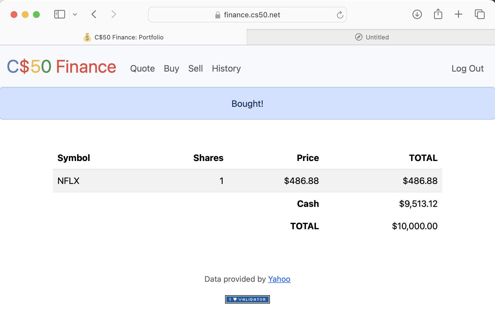

If you used wget to download finance.zip before 2024-09-08T00:00:00-04:00, be sure to copy, paste, and run this command inside of your finance directory in order to download a newer version of helpers.py:
[ -f helpers.py ] && curl -O https://cdn.cs50.net/2024/x/psets/9/finance/helpers.py
Note too that this new version of lookup now returns the stock name as well.
C$50 Finance
Implement a website via which users can “buy” and “sell” stocks, à la the below.

Background
If you’re not quite sure what it means to buy and sell stocks (i.e., shares of a company), head here for a tutorial.
You’re about to implement C$50 Finance, a web app via which you can manage portfolios of stocks. Not only will this tool allow you to check real stocks’ prices and portfolios’ values, it will also let you buy (okay, “buy”) and sell (okay, “sell”) stocks by querying for stocks’ prices.
Indeed, there are tools (one is known as IEX) that let you download stock quotes via their API (application programming interface) using URLs like https://api.iex.cloud/v1/data/core/quote/nflx?token=API_KEY. Notice how Netflix’s symbol (NFLX) is embedded in this URL; that’s how IEX knows whose data to return. That link won’t actually return any data because IEX requires you to use an API key, but if it did, you’d see a response in JSON (JavaScript Object Notation) format like this:
{
"avgTotalVolume":6787785,
"calculationPrice":"tops",
"change":1.46,
"changePercent":0.00336,
"close":null,
"closeSource":"official",
"closeTime":null,
"companyName":"Netflix Inc.",
"currency":"USD",
"delayedPrice":null,
"delayedPriceTime":null,
"extendedChange":null,
"extendedChangePercent":null,
"extendedPrice":null,
"extendedPriceTime":null,
"high":null,
"highSource":"IEX real time price",
"highTime":1699626600947,
"iexAskPrice":460.87,
"iexAskSize":123,
"iexBidPrice":435,
"iexBidSize":100,
"iexClose":436.61,
"iexCloseTime":1699626704609,
"iexLastUpdated":1699626704609,
"iexMarketPercent":0.00864679844447232,
"iexOpen":437.37,
"iexOpenTime":1699626600859,
"iexRealtimePrice":436.61,
"iexRealtimeSize":5,
"iexVolume":965,
"lastTradeTime":1699626704609,
"latestPrice":436.61,
"latestSource":"IEX real time price",
"latestTime":"9:31:44 AM",
"latestUpdate":1699626704609,
"latestVolume":null,
"low":null,
"lowSource":"IEX real time price",
"lowTime":1699626634509,
"marketCap":192892118443,
"oddLotDelayedPrice":null,
"oddLotDelayedPriceTime":null,
"open":null,
"openTime":null,
"openSource":"official",
"peRatio":43.57,
"previousClose":435.15,
"previousVolume":2735507,
"primaryExchange":"NASDAQ",
"symbol":"NFLX",
"volume":null,
"week52High":485,
"week52Low":271.56,
"ytdChange":0.4790450244167119,
"isUSMarketOpen":true
}
Notice how, between the curly braces, there’s a comma-separated list of key-value pairs, with a colon separating each key from its value. We’re going to be doing something very similar with our own stock database API.
Let’s turn our attention now to getting this problem’s distribution code!
Getting Started
Log into cs50.dev, click on your terminal window, and execute cd by itself. You should find that your terminal window’s prompt resembles the below:
$
Next execute
wget https://cdn.cs50.net/2024/x/psets/9/finance.zip
in order to download a ZIP called finance.zip into your codespace.
Then execute
unzip finance.zip
to create a folder called finance. You no longer need the ZIP file, so you can execute
rm finance.zip
and respond with “y” followed by Enter at the prompt to remove the ZIP file you downloaded.
Now type
cd finance
followed by Enter to move yourself into (i.e., open) that directory. Your prompt should now resemble the below.
finance/ $
Execute ls by itself, and you should see a few files and folders:
app.py finance.db helpers.py requirements.txt static/ templates/
If you run into any trouble, follow these same steps again and see if you can determine where you went wrong!
Running
Start Flask’s built-in web server (within finance/):
$ flask run
Visit the URL outputted by flask to see the distribution code in action. You won’t be able to log in or register, though, just yet!
Within finance/, run sqlite3 finance.db to open finance.db with sqlite3. If you run .schema in the SQLite prompt, notice how finance.db comes with a table called users. Take a look at its structure (i.e., schema). Notice how, by default, new users will receive $10,000 in cash. But if you run SELECT * FROM users;, there aren’t (yet!) any users (i.e., rows) therein to browse.
Another way to view finance.db is with a program called phpLiteAdmin. Click on finance.db in your codespace’s file browser, then click the link shown underneath the text “Please visit the following link to authorize GitHub Preview”. You should see information about the database itself, as well as a table, users, just like you saw in the sqlite3 prompt with .schema.
Understanding
app.py
Open up app.py. Atop the file are a bunch of imports, among them CS50’s SQL module and a few helper functions. More on those soon.
After configuring Flask, notice how this file disables caching of responses (provided you’re in debugging mode, which you are by default in your code50 codespace), lest you make a change to some file but your browser not notice. Notice next how it configures Jinja with a custom “filter,” usd, a function (defined in helpers.py) that will make it easier to format values as US dollars (USD). It then further configures Flask to store sessions on the local filesystem (i.e., disk) as opposed to storing them inside of (digitally signed) cookies, which is Flask’s default. The file then configures CS50’s SQL module to use finance.db.
Thereafter are a whole bunch of routes, only two of which are fully implemented: login and logout. Read through the implementation of login first. Notice how it uses db.execute (from CS50’s library) to query finance.db. And notice how it uses check_password_hash to compare hashes of users’ passwords. Also notice how login “remembers” that a user is logged in by storing his or her user_id, an INTEGER, in session. That way, any of this file’s routes can check which user, if any, is logged in. Finally, notice how once the user has successfully logged in, login will redirect to "/", taking the user to their home page. Meanwhile, notice how logout simply clears session, effectively logging a user out.
Notice how most routes are “decorated” with @login_required (a function defined in helpers.py too). That decorator ensures that, if a user tries to visit any of those routes, he or she will first be redirected to login so as to log in.
Notice too how most routes support GET and POST. Even so, most of them (for now!) simply return an “apology,” since they’re not yet implemented.
helpers.py
Next take a look at helpers.py. Ah, there’s the implementation of apology. Notice how it ultimately renders a template, apology.html. It also happens to define within itself another function, escape, that it simply uses to replace special characters in apologies. By defining escape inside of apology, we’ve scoped the former to the latter alone; no other functions will be able (or need) to call it.
Next in the file is login_required. No worries if this one’s a bit cryptic, but if you’ve ever wondered how a function can return another function, here’s an example!
Thereafter is lookup, a function that, given a symbol (e.g., NFLX), returns a stock quote for a company in the form of a dict with three keys: name, whose value is a str; price, whose value is a float; and symbol, whose value is a str, a canonicalized (uppercase) version of a stock’s symbol, irrespective of how that symbol was capitalized when passed into lookup. Note that these are not “real-time” prices but do change over time, just like in the real world!
Last in the file is usd, a short function that simply formats a float as USD (e.g., 1234.56 is formatted as $1,234.56).
requirements.txt
Next take a quick look at requirements.txt. That file simply prescribes the packages on which this app will depend.
static/
Glance too at static/, inside of which is styles.css. That’s where some initial CSS lives. You’re welcome to alter it as you see fit.
templates/
Now look in templates/. In login.html is, essentially, just an HTML form, stylized with Bootstrap. In apology.html, meanwhile, is a template for an apology. Recall that apology in helpers.py took two arguments: message, which was passed to render_template as the value of bottom, and, optionally, code, which was passed to render_template as the value of top. Notice in apology.html how those values are ultimately used! And here’s why 0:-)
Last up is layout.html. It’s a bit bigger than usual, but that’s mostly because it comes with a fancy, mobile-friendly “navbar” (navigation bar), also based on Bootstrap. Notice how it defines a block, main, inside of which templates (including apology.html and login.html) shall go. It also includes support for Flask’s message flashing so that you can relay messages from one route to another for the user to see.
Specification
register
Complete the implementation of register in such a way that it allows a user to register for an account via a form.
- Require that a user input a username, implemented as a text field whose
nameisusername. Render an apology if the user’s input is blank or the username already exists.- Note that
cs50.SQL.executewill raise aValueErrorexception if you try toINSERTa duplicate username because we have created aUNIQUE INDEXonusers.username. Be sure, then, to usetryandexceptto determine if the username already exists.
- Note that
- Require that a user input a password, implemented as a text field whose
nameispassword, and then that same password again, implemented as a text field whosenameisconfirmation. Render an apology if either input is blank or the passwords do not match. - Submit the user’s input via
POSTto/register. INSERTthe new user intousers, storing a hash of the user’s password, not the password itself. Hash the user’s password withgenerate_password_hashOdds are you’ll want to create a new template (e.g.,register.html) that’s quite similar tologin.html.
Once you’ve implemented register correctly, you should be able to register for an account and log in (since login and logout already work)! And you should be able to see your rows via phpLiteAdmin or sqlite3.
quote
Complete the implementation of quote in such a way that it allows a user to look up a stock’s current price.
- Require that a user input a stock’s symbol, implemented as a text field whose
nameissymbol. - Submit the user’s input via
POSTto/quote. - Odds are you’ll want to create two new templates (e.g.,
quote.htmlandquoted.html). When a user visits/quotevia GET, render one of those templates, inside of which should be an HTML form that submits to/quotevia POST. In response to a POST,quotecan render that second template, embedding within it one or more values fromlookup.
buy
Complete the implementation of buy in such a way that it enables a user to buy stocks.
- Require that a user input a stock’s symbol, implemented as a text field whose
nameissymbol. Render an apology if the input is blank or the symbol does not exist (as per the return value oflookup). - Require that a user input a number of shares, implemented as a text field whose
nameisshares. Render an apology if the input is not a positive integer. - Submit the user’s input via
POSTto/buy. - Upon completion, redirect the user to the home page.
- Odds are you’ll want to call
lookupto look up a stock’s current price. - Odds are you’ll want to
SELECThow much cash the user currently has inusers. - Add one or more new tables to
finance.dbvia which to keep track of the purchase. Store enough information so that you know who bought what at what price and when.- Use appropriate SQLite types.
- Define
UNIQUEindexes on any fields that should be unique. - Define (non-
UNIQUE) indexes on any fields via which you will search (as viaSELECTwithWHERE).
- Render an apology, without completing a purchase, if the user cannot afford the number of shares at the current price.
- You don’t need to worry about race conditions (or use transactions).
Once you’ve implemented buy correctly, you should be able to see users’ purchases in your new table(s) via phpLiteAdmin or sqlite3.
index
Complete the implementation of index in such a way that it displays an HTML table summarizing, for the user currently logged in, which stocks the user owns, the numbers of shares owned, the current price of each stock, and the total value of each holding (i.e., shares times price). Also display the user’s current cash balance along with a grand total (i.e., stocks’ total value plus cash).
- Odds are you’ll want to execute multiple
SELECTs. Depending on how you implement your table(s), you might find GROUP BY HAVING SUM and/or WHERE of interest. - Odds are you’ll want to call
lookupfor each stock.
sell
Complete the implementation of sell in such a way that it enables a user to sell shares of a stock (that he or she owns).
- Require that a user input a stock’s symbol, implemented as a
selectmenu whosenameissymbol. Render an apology if the user fails to select a stock or if (somehow, once submitted) the user does not own any shares of that stock. - Require that a user input a number of shares, implemented as a text field whose
nameisshares. Render an apology if the input is not a positive integer or if the user does not own that many shares of the stock. - Submit the user’s input via
POSTto/sell. - Upon completion, redirect the user to the home page.
- You don’t need to worry about race conditions (or use transactions).
history
Complete the implementation of history in such a way that it displays an HTML table summarizing all of a user’s transactions ever, listing row by row each and every buy and every sell.
- For each row, make clear whether a stock was bought or sold and include the stock’s symbol, the (purchase or sale) price, the number of shares bought or sold, and the date and time at which the transaction occurred.
- You might need to alter the table you created for
buyor supplement it with an additional table. Try to minimize redundancies.
personal touch
Implement at least one personal touch of your choice:
- Allow users to change their passwords.
- Allow users to add additional cash to their account.
- Allow users to buy more shares or sell shares of stocks they already own via
indexitself, without having to type stocks’ symbols manually. - Implement some other feature of comparable scope.
Walkthrough
Testing
Be sure to test your web app manually, as by
- registering a new user and verifying that their portfolio page loads with the correct information,
- requesting a quote using a valid stock symbol,
- purchasing one stock multiple times, verifying that the portfolio displays correct totals,
- selling all or some of a stock, again verifying the portfolio, and
- verifying that your history page shows all transactions for your logged in user.
Also test some unexpected usage, as by
- inputting alphabetical strings into forms when only numbers are expected,
- inputting zero or negative numbers into forms when only positive numbers are expected,
- inputting floating-point values into forms when only integers are expected,
- trying to spend more cash than a user has,
- trying to sell more shares than a user has,
- inputting an invalid stock symbol, and
- including potentially dangerous characters like
'and;in SQL queries.
You can also check the validity of your HTML by clicking the I ♥ VALIDATOR button in the footer of each of your pages, which will POST your HTML to validator.w3.org.
Once satisfied, to test your code with check50, execute the below.
check50 cs50/problems/2024/x/finance
Be aware that check50 will test your entire program as a whole. If you run it before completing all required functions, it may report errors on functions that are actually correct but depend on other functions.
Style
style50 app.py
Staff’s Solution
You’re welcome to stylize your own app differently, but here’s what the staff’s solution looks like!
Feel free to register for an account and play around. Do not use a password that you use on other sites.
It is reasonable to look at the staff’s HTML and CSS.
Hints
- To format a value as a US dollar value (with cents listed to two decimal places), you can use the
usdfilter in your Jinja templates (printing values as{{ value | usd }}instead of{{ value }}. -
Within
cs50.SQLis anexecutemethod whose first argument should be astrof SQL. If thatstrcontains question mark parameters to which values should be bound, those values can be provided as additional named parameters toexecute. See the implementation ofloginfor one such example. The return value ofexecuteis as follows:- If
stris aSELECT, thenexecutereturns alistof zero or moredictobjects, inside of which are keys and values representing a table’s fields and cells, respectively. - If
stris anINSERT, and the table into which data was inserted contains an autoincrementingPRIMARY KEY, thenexecutereturns the value of the newly inserted row’s primary key. - If
stris aDELETEor anUPDATE, thenexecutereturns the number of rows deleted or updated bystr.
- If
- Recall that
cs50.SQLwill log to your terminal window any queries that you execute viaexecute(so that you can confirm whether they’re as intended). - Be sure to use question mark-bound parameters (i.e., a paramstyle of
named) when calling CS50’sexecutemethod, à laWHERE ?. Do not use f-strings,formator+(i.e., concatenation), lest you risk a SQL injection attack. - If (and only if) already comfortable with SQL, you’re welcome to use SQLAlchemy Core or Flask-SQLAlchemy (i.e., SQLAlchemy ORM) instead of
cs50.SQL. - You’re welcome to add additional static files to
static/. - Odds are you’ll want to consult Jinja’s documentation when implementing your templates.
- It is reasonable to ask others to try out (and try to trigger errors in) your site.
- You’re welcome to alter the aesthetics of the sites, as via
- You may find Flask’s documentation and Jinja’s documentation helpful!
FAQs
ImportError: No module named ‘application’
By default, flask looks for a file called app.py in your current working directory (because we’ve configured the value of FLASK_APP, an environment variable, to be app.py). If seeing this error, odds are you’ve run flask in the wrong directory!
OSError: [Errno 98] Address already in use
If, upon running flask, you see this error, odds are you (still) have flask running in another tab. Be sure to kill that other process, as with ctrl-c, before starting flask again. If you haven’t any such other tab, execute fuser -k 8080/tcp to kill any processes that are (still) listening on TCP port 8080.
How to Submit
In your terminal, execute the below to submit your work.
submit50 cs50/problems/2024/x/finance
Why does my submission pass check50, but shows “No results” in my Gradebook after running submit50?
In some cases, submit50 may not grade the assignment due to (1) inconsistent formatting in your app.py file, and/or (2) additional, unneeded files being submitted with the problem set. To fix these issues, run style50 app.py in the finance folder. Address any issues that are revealed. Next, examine the contents of your finance folder. Delete extraneous files, such as flask sessions or other files that are not part of your implementation of the problem set. Further, run check50 again to ensure your submission still functions. Finally, run the submit50 command above again. Your result will appear in your Gradebook within a few minutes.
Please note that if there is a numerical score next to your finance submission in the submissions area of your Gradebook, the procedure discussed above does not apply to you. Likely, you have not fully addressed the requirements of the problem set and should rely upon check50 for clues as to what work remains.